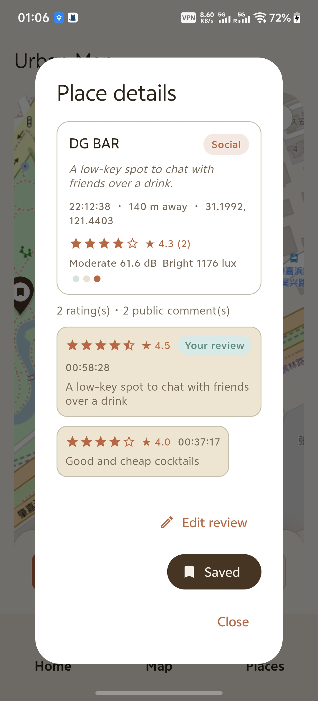
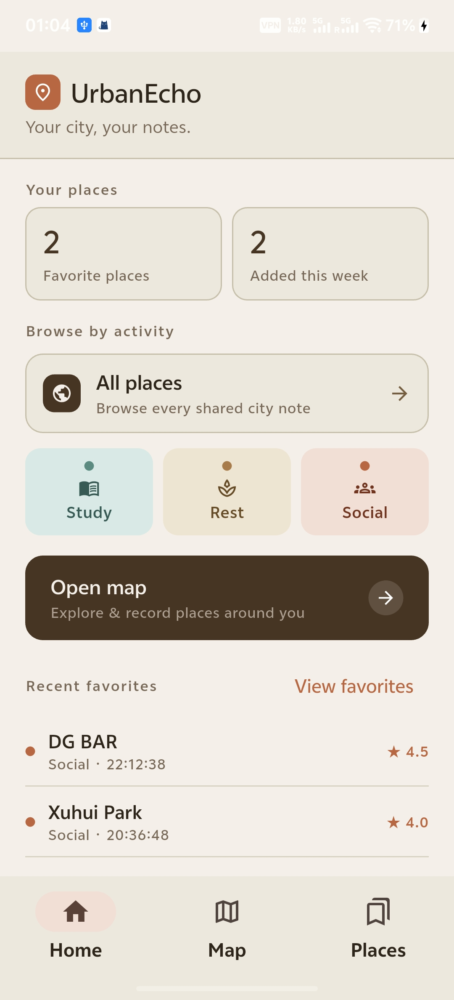
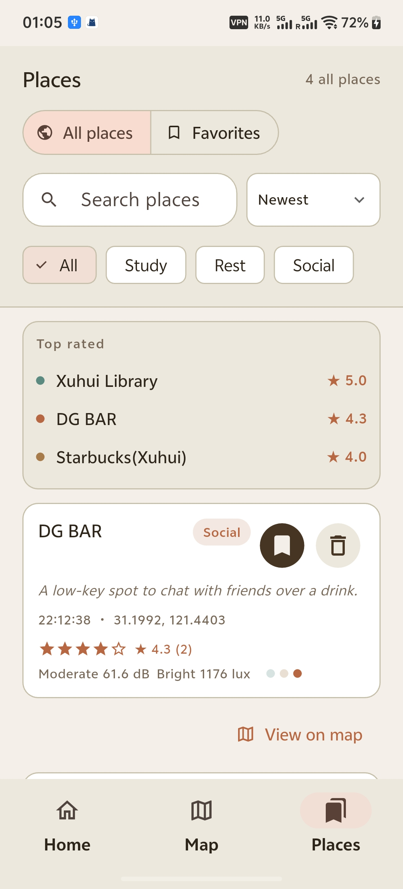
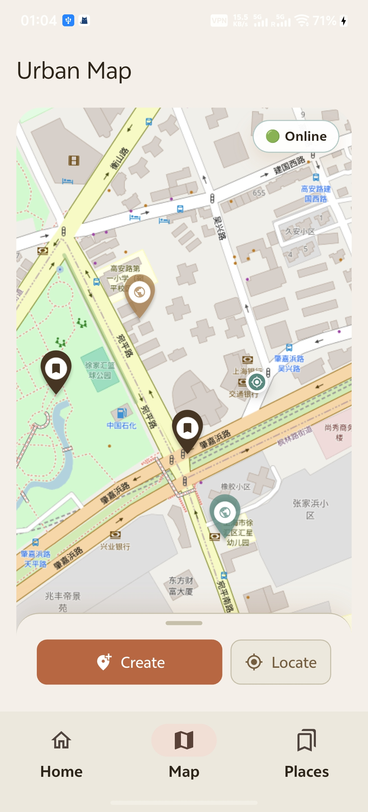
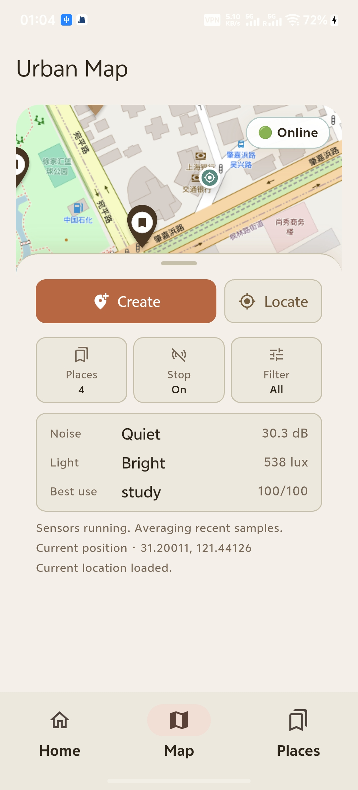
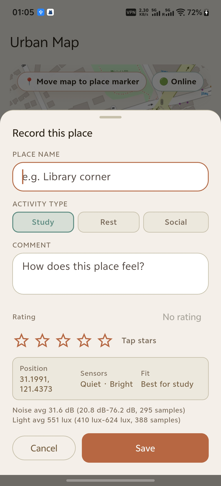
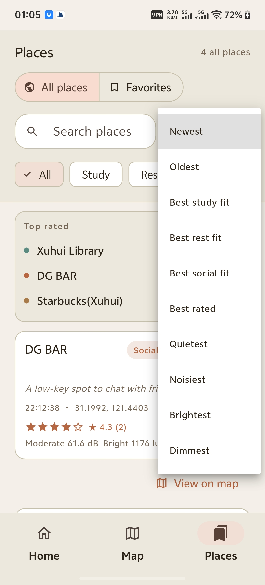
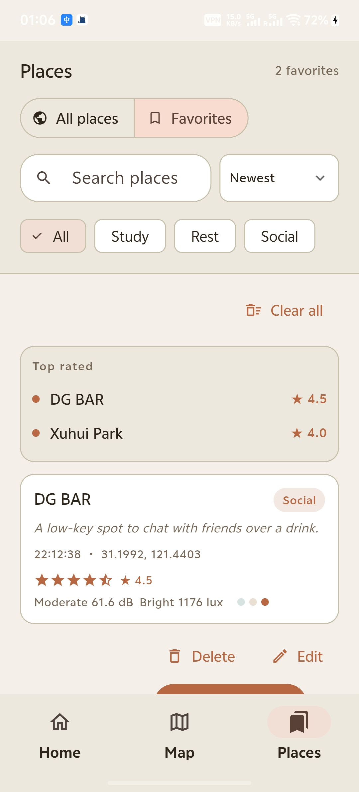

CASA0015 Mobile Systems Prototype
UrbanEcho
A city notebook that senses how places feel.
Record noise, light, location, notes, ratings, and public feedback so students can compare places for study, rest, and socialising.



What the app does
From a place you visit to a shared urban memory.
UrbanEcho is built around a simple loop: sense the environment, create a place, share it online, and let other users add their own comments and ratings.



Workflow
The prototype keeps the interaction small enough to test on a real phone.
Start noise and light capture before creating a place.
Move the map under the centre marker to choose the exact location.
Upload the place so it appears for other users through MQTT.
Let each user add one editable public rating and comment.
Browsing
All places for discovery, favorites for return visits.
Shared places stay in All Places. Favorites are local bookmarks so a user can keep useful places without changing public data. The detail page shows the current average rating and the public feedback thread.


Assessment fit
Mobile sensing, shared data, and a complete Android user journey.
UrbanEcho demonstrates on-device sensors, location-aware interaction, MQTT networking, persistent favorites, and an iterative prototype shaped by real testing on an Android phone.